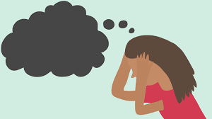

Psikolojik Danışman Randevu
0000 000 00 00

Sunduğumuz Hizmetler
Online psikolog danışmanlığı, dünyada uzun yıllardır kullanılmasına rağmen ülkemizde özellikle yaşadığımız pandemi sonrası artış göstermiştir.
Bilişsel Davranışçı Psikoterapi
Bilişsel davranışçı terapi bir psikoterapi türüdür. İnsan davranışı ve duygulanımını inceleyen psikolojik modellerden ya..
Obsesif - Kompulsif Bozukluk
Birçok insan zaman zaman çeşitli konularda evham, endişe ve takıntılara kapılabilir. Ancak çoğu kez günlük yaşam içinde ..

Travma Sonrası Stres Bozukluğu
Toplum içinde ruhsal travmaya yol açan olaylar çok yaygındır. Araştırmalar her iki kişiden birinin bu tür olaylarla haya..
Evlilik ve İlişki Problemleri
Öncelikle insanın olduğu her yerde çatışma vardır. Çıkan çatışmalar her zaman problem olarak nitelendirilemez. Çatışma y..
Stres Yönetimi ve Öfke Kontrolü
Öfke ve stres hepimizin yaşadığı olağan bir duygudur. Stresin çok düşük ya da çok yüksek seviyelerde olması hem kendimiz..
Depresyon
Depresyon (majör depresif bozukluk) nasıl hissettiğinizi, nasıl düşündüğünüzü ve nasıl davrandığınızı olumsuz etkileyen ..
Yetişkin Ve Çift Terapi
Terapi hizmetimiz tamamen kişinin biricik olan problemlerine özgün olarak, sizin spesifik ihtiyaçlarınıza göre belirleni..
Hakkımızda
"Şehir Adı" Psikolojik Danışman Örnek İsim
2021 yılında Ufuk Üniversitesi Eğitim Fakültesi Psikolojik Danışmanlık ve Rehberlik Ana bilim dalını %30 İngilizce eğitim ile bitirdim. Çocuk, ergen, yetişkin ve çift terapi hizmeti vermekteyim. Bilişsel davranışçı terapi (BDT) ve aile danışmanlığı ile Takıntılar/Obsesif Kompulsif Bozukluk (OKB), Panik Atak, Fobiler, Kaygı Bozuklukları, Depresyon, Travma Sonrası Stres Bozukluğu, Evlilik ve İlişki Problemleri, Boşanma Problemleri, Doğru Nefes ve Gevşeme Teknikleri, Stres Yönetimi ve Öfke Kontrolü ve Kriz Yönetimi alanlarında terapi sağlamaktayım. Uyguladığım Testler: Minnesota Çok Yönlü Kişilik Envanteri (MMPI), Beck Anksiyete ve Beck Depresyon Ölçeği, Kelime Çağrışım Testi, Tematik Algı Testi (TAT), Gazi-Beier Cümle Tamamlama Testi, HTP Kişilik Testi, Luisa Düss Psikanalitik Öykü Testi, Aile Uyum Ölçeği, Kuder İlgi Alanları, Envanteri, Rokeach Değer Envanteri, Metropolitan Okul Olgunluğu Envanteri, Porteus Labirent Envanteri, Peabody Resim- Kelime Envanteri, Farklılaşma Analizi Envanteri, Ego Durumları Transaksiyonel Analiz Anketi, Yaşam Pozisyonları Ölçeği, Evlilik Öncesi İlişkileri Değerlendirme Envanteri
Genel Sorular
Kişinin, baş etmekte zorlandığı sorunlar, yaşadığı zorluklar nedeniyle hasar almış ruh sağlığını güçlendirerek daha sağlıklı hale getiren ve bu süre zarfında sadece bu alandaki problemi çözmekle kalmayan, aynı zamanda kişinin kendisi, çevresi ve birçok şeyle ilgili farkındalığının da arttığı iyileştirici bir süreçtir.
İlişkilerinizde etkili iletişim kurmak istiyorsanız, Özgüven ve girişkenlik konularında zorluk yaşadığınızı düşünüyorsanız, Stres ve kaygı ile baş etmek istiyorsanız, Kendinizi daha iyi tanımak istiyorsanız, Çalıştığınız halde başarılı olamıyorsanız, Sınavlar ve notlar ile probleminiz varsa, Mesleki alanlarda kendinize bir yol çizmek istiyorsanız, Her türlü karar verme güçlüğü çekiyorsanız, Uyum zorluğu yaşıyorsanız, Yaşamım nereye doğru gidiyor diye endişeleniyorsanız. Kimseye anlatamadığınız ancak paylaşmak gerekliliği hissettiğiniz duygu ve düşünceleriniz olduğuna inanıyorsanız, Zamanı etkili kullanamıyorsanız, Nereden başlayacağınızı bilemiyorsanız, Hayatınızda bir şeylerin ters gittiğini düşünüyorsanız, İnsanlarla daha etkili iletişim kurmak ve duygularınızı etkili şekilde ifade etmek istiyorsanız, Kendinizi ve çevrenizi daha iyi tanımak istiyorsanız, Yalnızlık ve utangaçlık ile başa çıkmak istiyorsanız, Stresli ve aşırı kaygılıyım diyorsanız, Bulunduğunuz ortama uyum sağlayamadığınızı düşünüyorsanız, Psikolojik Danışmanlık Merkezi’me gelerek görüşebiliriz.
Danışmanlık süreci başlangıcında sizi dinler, gerekli değerlendirmeleri yapar, gizlilik ve profesyonel ilişki çerçevesinde sizinle hedefler belirleyerek bu doğrultuda sizinle çalışmaya başlar. Sizi objektif bir şekilde yargılamadan dikkatle dinler. Sizi içten bir ilgiyle dinler, sizi daha iyi tanımak için sorular sorar. Sorununuzu çözmenize yardımcı olan kişidir ancak nasıl yaşamanız konusunda size öğüt veren kişi değildir İnançlarınıza, değerlerinize, düşüncelerinize karşı önyargısız ve hassas olmaya çalışır. Gerekli durumlar gördüğünde sizi başka uzmanlara yönlendirebilir. Sorunlarınızı daha etkili bir şekilde çözebilmeniz için onları daha iyi anlamanıza yardımcı olmaya çalışır.
En temel sorumluluğunuz planlanan oturumlara düzenli olarak katılmanızdır. Oturuma gelmenizi engelleyecek bir durum söz konusu olduğunda, bunu, oturumdan bir gün önce ya da olabildiğince erken bir tarihte danışmanınıza bildirmeniz gerekmektedir.
Seanslar yaklaşık olarak 50 dakika sürer. İlk seans ise bazen daha uzun sürebilir.
Her danışanın terapiye başlama sebebi birbirinden farklıdır ve dolayısıyla terapi sürecinin kaç seansta sonlanacağını önceden belirlemek mümkün değildir. Terapi süreci danışanların ihtiyaçları doğrultusunda şekillendirilir.
Online terapi psikolog ve danışanın aynı mekanda bulunmalarına olanak olmadığı durumlarda görüntülü konuşma ile yapılmaktadır. Danışanın terapi sırasında yalnız olması gerekmektedir. Bulunduğu ortamın ise sessiz ve sakin olması oldukça önemlidir.
Psikoloğunuzu seçerken öncelikle eğitimine ve bilgisine güvendiğiniz birini seçmeniz gerekir. Terapi sürecine başlarken güvendiğiniz ve size yarım edebileceğine inandığınız kişileri tercih etmeniz süreç içerisinde güvenli bir iletişim kurmanıza yardımcı olur. Psikoloğun kullandığı terapi yaklaşımı ve uzmanlık alanları belirleyici faktörlerdendir.
Merhaba, Ben Örnek İsim
"Şehir Adı"Psikolojik Danışman
"Şehir Adı "Psikolojik danışma randevusu için lütfen bizi aramaktan çekinmeyin.
Neden Biz
Ruh sağlığı gibi yaşam kalitesini doğrudan etkileyen bir alanda hizmet veriyor olmanın bilinciyle; psikoloji alanındaki akademik birikimden faydalanan, en son teknolojik gelişmeleri yakından takip ederek uygulayan, sürekli gelişimi hedefleyen bir yaklaşımı benimsiyoruz.
Gönüllülük Danışanlarımızın görüşme, değişim ve gelişme için istekli ve gönüllü olmaları esastır. Çalışma Saatlerine Bağlılık Randevu saatlerine sadık kalır, kendimizle ilgili yaşanabilecek gecikmelerin mutlaka telafisini yaparız. Evlilik ve Çift terapisi seansları 1,5 saat, diğer seanslar ise 45 dakika sürer. Alanda Yeterlilik-Yetkinlik Sadece alanımızla ilgili konularda, uzmanı olduğumuz yöntemler ve yetkin olduğumuz alanlarda çalışırız. Konsültasyon Danışanımız, gerekli bulunan durumlarda ilgili uzmana (psikiyatriste ve/ya nörologa) yönlendirilir ve sürece, bu ilgili uzmanla iletişim ve paylaşım içerisinde devam edilir.
Aile Danışmanlığı
Aile danışmanı, aile üyelerinin aralarında bulunan ilişkilerdeki sorunları açığa çıkaran ve bireylerin bu sorunlar hakkında farkındalık kazanmalarına neden olan kişilerdir.
Oyun Terapisi
Oyun ve oyuncaklar yoluyla çocukların ihtiyacını, problem durumunu ifade etmeye yarayan terapi şeklidir. 2- 11 yaş arası çocuklarda kullanılır.
Online Terapi
Belirli bir gün ve saatte yapılan, seans sırasında başkalarının yer almadığı online terapide danışan gizliliği en önemli konulardan biridir.
Bilişsel Davranışçı Terapi
Bilişsel Davranışçı Terapi, günümüzde en sık kullanılan psikoterapi türüdür. Depresyon, kaygı bozukluğu, fobiler, obsesif kompulsif bozukluk gibi pek çok rahatsızlıkta etkili sonuçlar veren kanıta dayalı bir uygulamadır.
Psikolojik Danışman Randevu
psikolojik danışman Şeyda Suvarioğlu. Psikolojik danışma randevusu oluşturmak için bizi arayabilir yada Whatsapp ile iletişime geçebilirsiniz.
Bloglar
Panik Atak
Panik Atak, ansızın ortaya çıkan ve yaklaşık olarak 10 dakikada maksimum düzeye gelen aşırı korku ya da rahatsızlık hiss..
Cinsel Sorunlar
Cinsellik, yaşamı keyiflendiren, renklendiren, eğlenceli hale getiren; hayatın ve türün devamını sağlamak için olan dürt..
ofisimizde sizlere en iyi hizmeti vermek için çalışıyoruz. En kötü zamanlarınızda uzman ekibimiz ile psikolojik destek veriyoruz.
PAZARTESİDEN CUMAYA : 08:00 – 21:00
CUMARTESİ : 10:00 - 18:00 :
PAZAR : Kapalı :